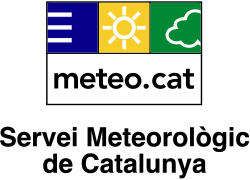
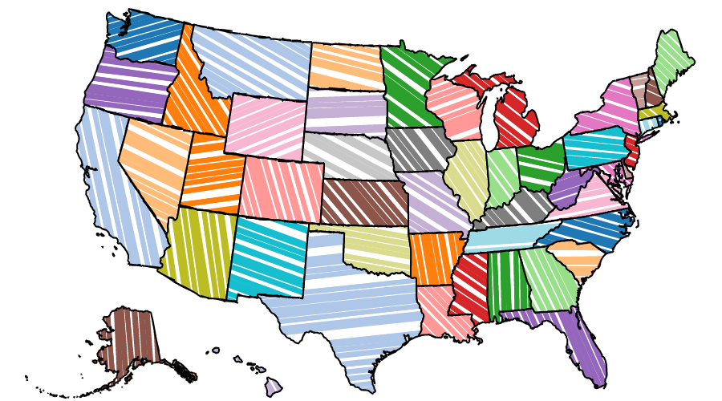
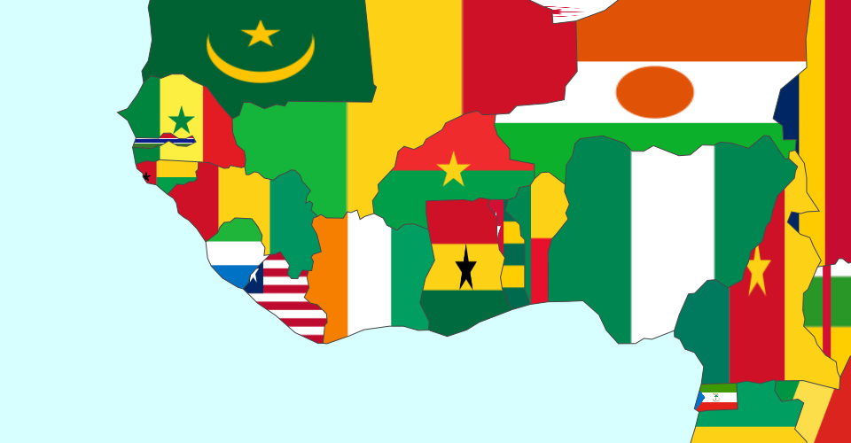
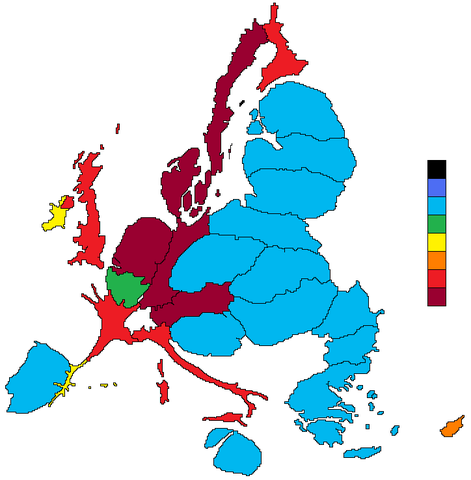
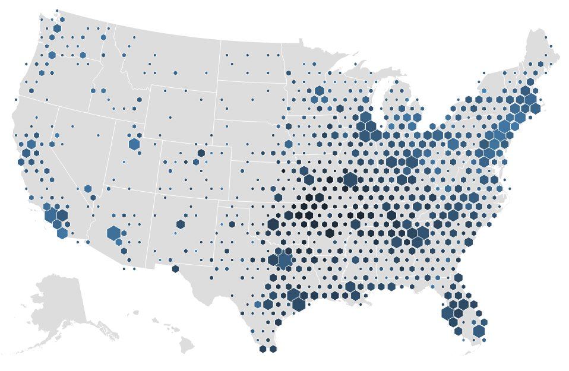
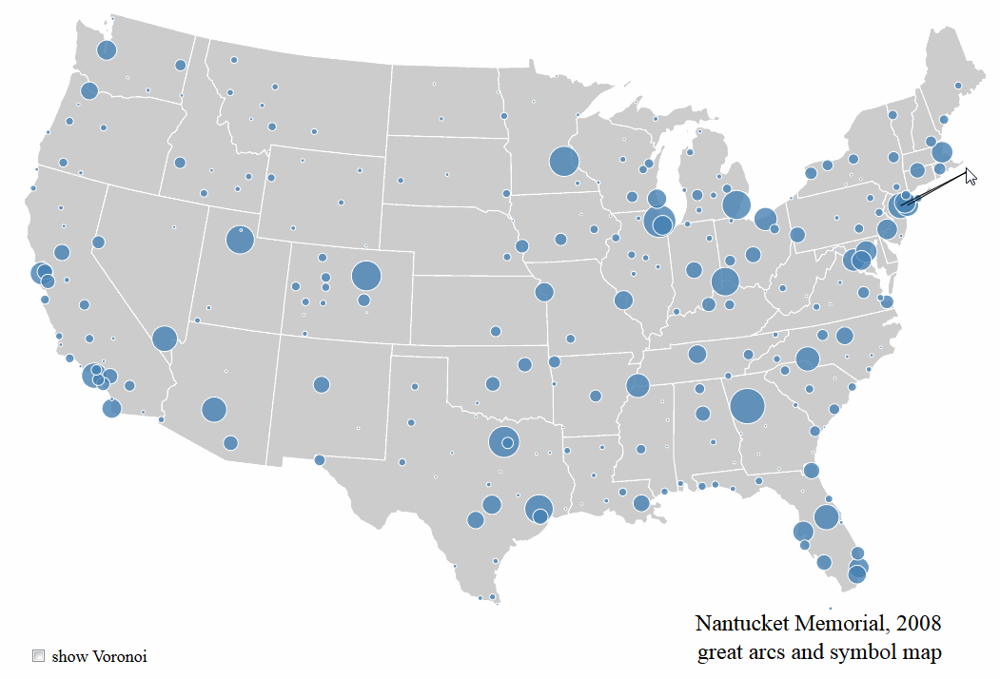
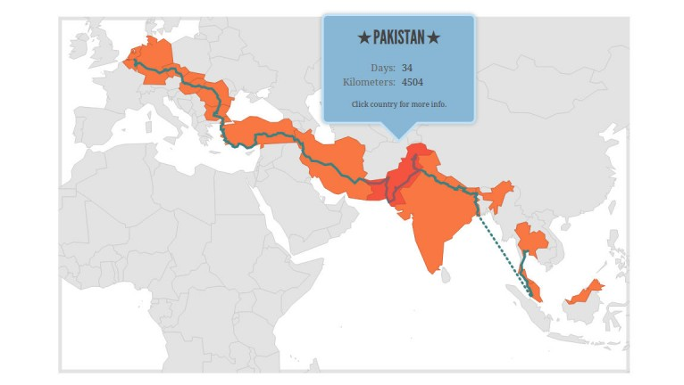

<!DOCTYPE html>
<meta charset="utf-8">
<meta name="viewport" content="width=device-width">
<style>

@import url(http://fonts.googleapis.com/css?family=PT+Serif|PT+Serif:b|PT+Serif:i);

section {
  background: #fff;
  color: #000;
  padding: 2em;
  font-family: "PT Serif", Baskerville, Georgia;
}

.grey {
  color: #777;
}

.green {
  color: #89b889;
}
a:link,
a:visited {
  color: orange;
  text-decoration: none;
}

a:hover {
  text-decoration: underline;
}

h3 {
  color: #89b889;
}

mark {
  color: #89b889;
  background: none;
}

blockquote {
  background: #eee;
  border-left: 10px solid #89b889;
  margin: 1.5em 10px;
  padding: 0.5em 10px;
  quotes: "\201C""\201D""\2018""\2019";
}

blockquote:before {
  color: #89b889;
  content: open-quote;
  font-size: 4em;
  line-height: 0.1em;
  margin-right: 0.25em;
  vertical-align: -0.4em;
}
blockquote p {
  display: inline;
}

.example {
  text-align: left;
}

.aligned_images div{
  display: inline-block;
}
</style>


<section style="text-align:center; padding:5em 9em;">
    <h3 style="font-size:140%;"><b>Datos raster meteorológicos con D3js</b></h3>
</section>
<section style="text-align:center; padding:5em 9em;">
    <h3 style="font-size:140%;">Servei Meteorològic de Catalunya</h3>
    
</section>
<section style="text-align:center; padding:3em 6em;">
    <h3>Fuentes de datos</h3>
    <ul style="text-align: left">
      <li>Estaciones meteorológicas automáticas/observadores</li>
      <li>Descargas eléctricas</li>
      <li>Radar meteorológico</li>
      <li>Imágenes de satélite</li>
      <li>Modelos de predicción numérica</li>
      <li>Productos derivados</li>
    </ul>
</section>
<section style="text-align:center; padding:3em 6em;">
  <h3>Modelos de predicción numérica</h3>
  <ul>
    <li>10 modelos (y hasta tres resoluciones)</li>
    <li>Hasta 14 variables de interés</li>
    <li>Hasta 5 niveles de presión de interés</li>
    <li>Dos salidas al dia, hasta 72 momentos por salida</li>
  </ul>
  <h3>= Sobre 30.000 imágenes por día</h3>
</section>
<section style="text-align:center; padding:5em 9em;">
    <h3>Opciones</h3>
    <ul style="text-align: left">
      <li>Renderizar a nivel de servidor
        <ul><li>MapServer, GeoServer...</li></ul>
      </li>
      <li>Renderizar a nivel de cliente</li>
      <ul><li>OpenLayers, Leaflet</li></ul>
    </ul>
</section>
<section style="text-align:center; padding:2em;">
    <h3>D3js: Datos vectoriales</h3>
    <div class="aligned_images">
      <div></div>
      <div></div>
      <div></div>
    </div>
    <div class="aligned_images">
      <div></div>
      <div></div>
      <div></div>
    </div>
</section>
<section style="text-align:center; padding:5em 9em;">
    <h3>Opciones</h3>
</section>
<script src="js/d3.v4.min.js"></script>
<script src="js/stack.v2.js"></script>
<script>
var mystack = stack()
    .on("activate", activate)
    .on("deactivate", deactivate);

var section = d3.selectAll("section"),
exampleOneIndex = 0;

for(var i = 0; i < section['_groups'][0].length; i++){
    if( section['_groups'][0].item(i).id == 'exampleOne')
      exampleOneIndex = i;

}


function refollow() {
  followAnchor.style("top", (followIndex + (1 - mystack.scrollRatio()) / 2 - d3.event.offset) * 100 + "%");
}

function activate(d, i) {
  if (i === exampleOneIndex) {
    //startExampleOne();
  }
}

function deactivate(d, i) {
  if (i === exampleOneIndex) {
    //stopExampleOne();
  }
}

</script>
